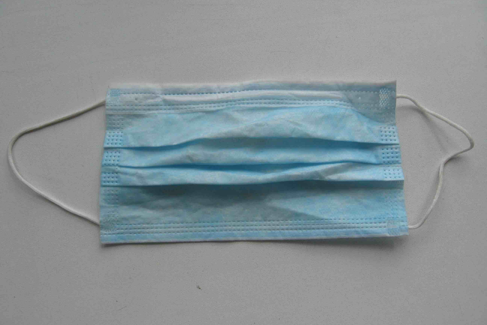

#findthemasks
Healthcare workers need protective equipment so they can help protect everyone else. Together we can find the masks!
Find out how to donate!America’s frontline healthcare workers are treating COVID19 patients without adequate protective gear, risking their lives! They have taken to Twitter on #GetMePPE to ask for help:
NYC. Mother of two, double frontline MD couple. Don’t make us orphan our two toddlers. Running out of masks, eye protection and gloves at work. @VP @NYGovCuomo #GetMePPE @choo_ek pic.twitter.com/siI9TegNOL
— Cornelia Griggs (@CorneliaLG) March 18, 2020
This is what it looks like in the ICU. Rows of brown bags each labeled with the name of a nurse or doctor . We are told to keep and reuse these masks , which under normal conditions would be thrown out each time we leave the isolation room. #GetMePPE pic.twitter.com/8blP8LzAGv
— Victoria Williams (@V_Q_W) March 19, 2020
I work Urgent Care, seeing patients with flu-like symptoms all day long. We have been told that a surgical mask is all we "need" to protect us from #COVID19. #GetMePPE pic.twitter.com/trIu40JSpA
— Jess HT MD (@JessHTMD) March 17, 2020
We need to help the helpers, right now.
We need to find the masks.
Look in your basement, your emergency kit, your bug out bag, your workbench for N95 masks. They look like this:

All of these masks can save lives now if you get them into the hands of healthcare workers.
If you find surgical masks, those are also in short supply, and in many places are being used in place of N95s. They look like this and can come in multiple colors.
Disposable booties, safety goggles, and disposable suits are also in short supply. If you have these things or know someone who might (HVAC installers? Construction workers?) please share this site with them!
How to donate
- Call your local hospital and ask to speak to the charge nurse.
- Say what you have.
- If they say they’re fine, that’s ok. Call back in a couple days.
If you find a hospital taking donations from the public, please fill in this form so we can add them to the site.
List of donation sites
California
San Francisco
Kaiser Permanente
2130 O'Farrell St
San Francisco, CA 94115
Accepting unopened boxes and bags of N95s, surgical and isolation masks, goggles (non-vented), hand sanitizer, gowns, clorox or sani-cloth wipes. Bring to loading dock between 6am-2:30pm Monday-Friday and call 415-833-2593 so staff can come out and meet you. Or mail to same address ATTN: Hospital Command Center. Donation info flyer.
{kind=link}
Kaiser Permanente ER
2425 Geary Blvd 2nd Floor
San Francisco CA 94115
Accepting OPEN boxes of N95s at the ER. Give to any security guard.
Zuckerberg San Francisco General Hospital
1001 Potrero Ave
San Francisco, CA 94110
Accepting unopened boxes and bags of N95s. For now, call ahead: call the switchboard, ask for the charge nurse to arrange drop-off at the main entrance off 23rd St.
San Jose
Valley Medical Center Foundation
2400 Clove Dr
San Jose, CA 95128
They have parking right outside (don't be discouraged by the construction) and would be very happy to receive your donations of face shields and N-95s (including open packages). They are open from 8 am to 5 pm. Monday through Friday.
Massachusetts
Burlington
Lahey Hospital & Medical Center
41 Burlington Mall Road
Burlington, MA 01805
Accepting unopened N95s and surgical masks. Bring to ER front desk.
Cambridge, Everett, Somerville
Cambridge Health Alliance (CHA) - Cambridge Hospital
1493 Cambridge St
Cambridge, MA 02139
Cambridge Health Alliance (CHA) - Everett Hospital
103 Garland St
Everett, MA 02149
Cambridge Health Alliance (CHA) - Somerville Hospital
33 Tower St
Somerville, MA 02143
Accepting new and unused N95 masks, paper masks, paper protective gowns, and protective glasses/goggles (which can be previously used). Drop off at entrance with public safety officers. CHA Newsroom - Personal Protective Equipment (PPE) Donations.
Nevada
Sparks
Northern Nevada Medical Center
2375 E. Prater Way
Sparks, NV, 89431
Mail N95s and surgical masks (opened ok), gloves, goggles, booties to: Alexa Parker, Emergency Dept.- NNMC, 2375 E Prater Way, Sparks, NV, 89431
Oklahoma
Altus
Jackson County Memorial Hospital
1200 East Pecan St.
Altus, OK 73521
N95s, surgical masks, face shields unopened. Call 580-379-5000 and ask for Mary Jencks.
Oregon
Portland
Portland Fire & Rescue
Between the hours of noon-4 pm Monday - Friday
Fire Marshal Office Parking Lot
1300 SE Gideon St
Portland, OR 97202
Multnomah County Headquarters
(Loading dock on 6th St.)
501 SE Hawthorne
Portland OR 97214
The two sites above can take: latex free gloves, procedural masks, surgical masks, N95 respirators and N95 filters, Other respirators (P100's, PAPR's, and PAPR supplies / parts), face shields, splash shields, gowns, hand sanitizer, disinfecting wipes. Full info.
Utah
Moab
Moab Regional Hospital
450 Williams Way
Moab, UT 84532
Accepting open or unopened packs of N95s and surgical masks and safety goggles.
Washington
Burien
Franciscan Women's Health Associates - Burien
16045 1st Ave S
Burien, WA 98148
Accepting open or unopened packs of N95s and surgical masks. Bring up stairs to the Women's care desk or call and a staff member will come down to get them.
Seattle
Harborview Emergency Department
325 9th Ave
Seattle, WA 98104
Accepting unopened N95s, isolation, and surgical masks. Write “masks for emergency department” on package. Drive to ER entrance, there are screeners and security workers outside who can receive them.
Seattle Children’s Administrative Building
6901 Sand Point Way NE
Seattle, WA 98115
Accepting unopened boxes and bags of surgical and isolation masks. Curbside dropoff between 9 a.m. and 3 p.m. Monday-Friday. Call (206) 987-2153 when you arrive. As of March 19 not accepting N95s, they have enough.
Swedish Ballard
5300 Tallman Ave NW
Seattle, WA 98107
Accepting open or unopened boxes and bags of N95s and surgical masks. Put in donations bin at registration desk or at medical treatment center.
In the coming days this will expand into a nationwide list of donation sites with drop-off procedures. If you are a hospital employee and can accept donations from the public, please fill in this form.
Got a comment or suggestion? Want to help? contact@findthemasks.com
made with <3 in Seattle